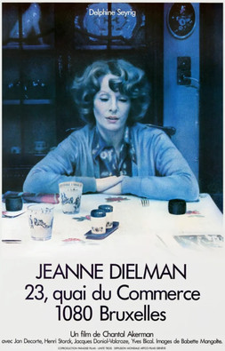

Chantal Akerman
1975
198 minutes
This is a notoriously long and seemingly bland film with a long bland title and a mysterious penchant for being ranked one of the best films of all time, which is surprising for a lot of film fans who have never even heard of it. This movie clocks in at 201 minutes and is mostly about a Belgian housewife doing chores over the course of three days. This film is not for everyone. You watch most of this film under less-than ideal circumstances, in a bar on your phone with earphones in and a beer in front of you. It's not the best viewing experience, but it gives you the patience to endure three hours of watching a woman clean her tub and make dinner without falling asleep in your chair that you may not otherwise have had, to be quite honest. Most of the time she is doing quite dull things, but occasionally about once a day she seems to be letting men into her home as a prostitution side hustle, which happens discreetly offscreen.
It is quite a good film, and the slowness and dullness and repetitiveness is the point. You are lulled into almost a trance to the point where you start noticing the subtle ways in which this woman's life starts coming apart. Nearly nothing of note happens in it (aside from the mostly-undepicted sex work and some dull conversations with her son), so you actually notice when she forgets to button a button on her top or she leaves a light on or forgets to put the lid on a cookie jar. It leaves you waiting for the other shoe to drop. Eventually toward the end of the film we see one very dramatic thing happen when she kills one of her sex-work clients and then comes out and slumps quietly into a chair lost in thought.
Okay, so it's less a film than an experience. But man, it is a good gag. You wish you knew more people who were patient enough to go into this without knowing anything about it to see what their reaction would be.
This is a weird one for you. It took you awhile to recognize the actress, although she is quite striking and iconic and has a distinctive voice. The housewife is played by Delphine Seyrig, who also starred in the similarly atmospheric and spooky Last Year at Marienbad as well as one of your favorite counterculture films of all time, Mr. Freedom, which has been your traditional 4th of July viewing for many years.
In Mr. Freedom, Delphine Seyrig sports a large frizzy red wig and is the love interest for the title character, who is a racist thuggish jingoistic ugly-American vigilante superhero who is a blend of James Bond and Superman. Mr. Freedom is tasked with saving France from the leftists and communists and students by spreading American democracy in the most violent ways possible while opposing evil supervillains like Moujik Man and Red China Man. He spends much of the film moping about how sad he is that no one loves him and everyone is scared of him even though he is working so hard to make the world safe for everyone and spread freedom everywhere. It makes you sad that most of your friends haven't seen this and don't find the concept nearly as hilarious as you do.
Time to choose something different: